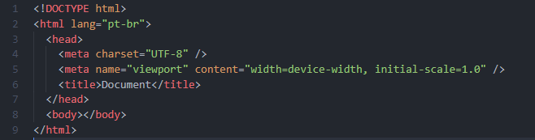
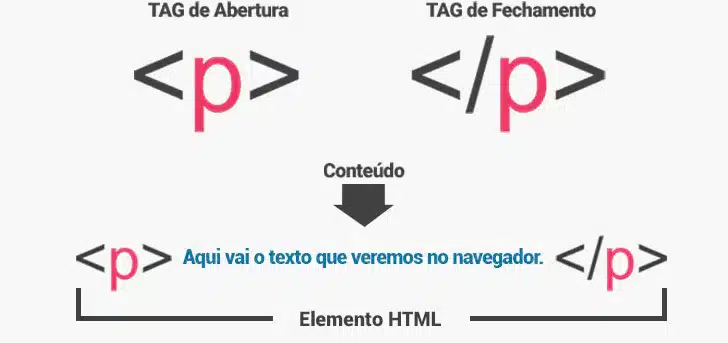
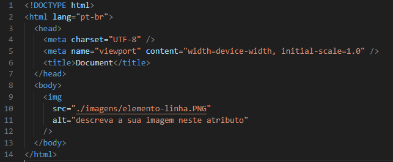

O HTML (HiperText Markup Language) é uma linguagem de marcação, muito utilizada para estruturar páginas web. Outras tecnologias além do HTML são utilizadas para descrever a aparência e apresentação como o CSS (Cascading Style Sheets) ou para adicionar funcionalidades e comportamentos como o JavaScript.
O "Hipertexto" refere-se a links que conectam as páginas web entre si, dentro de um único site ou entre sites. Os links são um aspecto fundamental da web. Ao enviar conteúdo para a internet e vinculá-lo a páginas criadas por outras pessoas, você se torna um participante ativo da World Wide Web.
HTML usa "marcação" para anotar textos, imagens e outros conteúdos para exibição em um navegador web. A marcação HTML utiliza elementos e tags para demarcar textos.
Um elemento HTML é diferenciado de outros textos no documentos por "tags", que consistem no nome do elemento cercado por "<" e ">". Uma tag deve ter ínicio e fim, assim demarcando o espaço utilizado para determinado texto.
Para o navegador reconhecer que o documento é um arquivo HTML devemos nomea-lo da maneira correta, então, para criarmos o arquivo devemos utlizar a extensão ".html" no fim do nome do nosso arquivo. Um exemplo comum é "index.html" para nomear o arquivo principal.
O html básico deve conter os elementos como o "html" que é para demonstrar o tipo do arquivo, o elemento "head" que serve para adicionarmos fucionalidades a nossa página e o elemento "body" é o corpo do nosso documento, onde o conteúdo será exibido na pagina.
Segue exemplo como deve ser uma estrutura básica de um arquivo.
Arquivos HTML são constituídos de elementos, ou seja, componentes que informam a um navegador web como estruturar e interpretar um documento HTML. Um elemento em HTML é formado por uma tag de início <.tag inicio> e uma tag de fechamento, <.tag fechamento> e um conteudos inserido entre elas, lembrando que exixtem tagas que não são fechadas como <.img/>.
Elementos HTML são usados para expressar partes do documento, como cabeçalhos, parágrafos e rodapés, e para incorporar conteúdos como hyperlinks, texto e imagens. Um arquivo HTML escrito com elementos de forma semântica torna o HTML mais compreensível, definindo melhor as diferentes seções e o layout das páginas Web.
Vejamos abaixo como se estrutura os elementos das tags HTML:
Existem dois tipos de elementos principais, os em nível de bloco e os elementos em linha. Vejamos abaixo a diferença entre eles:
Os elementos em nível de bloco sempre começam com uma nova linha, ocupam toda a largura de uma página Web, da esquerda para a direita e estruturam a parte principal da página dividindo-a em blocos coerentes e estruturados.
Os elementos em linha não começam com uma nova linha e assumem a largura conforme o requisito para o espaço é necessário. Aparecem na mesma linha que os outros elementos e diferenciam a parte de um determinado texto, lhe conferindo uma função particular.
Atributos HTML são palavras especiais que fornecem informações adicionais sobre os elementos e definem caracteristicas ou propriedades adicionais destes elementos como largura ou altura de uma imagem. Os atributos são especificados dentro da tag de início com um nome e um valor neste formato: <.tag atributo= "#">.
Abaixo vemos o elemento <.img> que necessita do atributo obrigatório src para informarmos o caminho da imagem que será exibido no documento.
Existem vários tipos de tags HTML e cada uma tem um fim especifico.
Segue abaixo os tipos de tags mais utilizadas: